User Manual for Paleomag
2008 Software
Last updated: September 2007
by
Laurent Carporzen, MIT
after the 20 June 2006 version by Bob Kopp, Caltech
Caution: As with all pieces of sophisticated scientific equipment, the 2G Superconducting RockMagnetometers, the sample changer, the AF units, and the rock mag units can break. The Paleomag 2008 Visual Basic code can also break. If you encounter an error you are not familiar with, do your best to contact someone who is familiar with it, and don’t panic! If you smell smoke or sense the equipment becoming unusually hot, shut down the electronics. Never shut down the AF degaussing unit without first turning down the control knobs on the amplifier to which it is connected.
Starting the Visual Basic code
The Paleomag 2008 Visual Basic code can be started either from a compiled .EXE file or by launching the Visual Basic project within Visual Basic 6. The latter is the recommended approach, as it allows you to debug errors in the code as they arise. To launch Paleomag 2008 in this fashion, open Paleomag.vbp within Visual Basic (typically there is a short cut on the Desktop to do this) and start the code either by clicking on the “Play” button (►) in the toolbar or by going to the Run menu and selecting “Start with Full Compile.”
Once the code starts, you will encounter a login box. Type a user name into the user name field and your email address into the email address field. Assuming the email settings in the program are correctly set, this email address will receive error messages and sample status reminders during the course of your runs. The user name is arbitrary, and is used for logging magnetometer use.
It is also possible to have the messages sent to you cellular phone. E.g. to send messages to your Verizon phone enter: phonenumber@vtext.com, AT&T: number@txt.att.net, T-Mobile: phonenumber@tmomail.net, Sprint: phonenumber@messaging.sprintpcs.com, etc.
Before you click Ok to log in, read through the reminder window. Check to make sure the all three 2G SQUID boxes and the motor drive box are on. What else appears in the reminder window depends upon what optional equipment is connected to the magnetometer.
If there is a Susceptibility bridge connected, make sure it is turned on and set to the scales described in the reminder box. If you are planning on doing AF demagnetizations, make sure the AF unit is on, the AF amplifier is turned all the way up on both channels, and the cooling air is on. If you are planning on doing rock mag, make sure the IRM Pulse box and the ARM biasing field box are on. In order to avoid accidental remagnetization of your samples, it is a good idea to keep the IRM and ARM boxes off when not running rock magnetic measurements.
CAUTION: If the IRM box is on, make sure there are no samples on the sample changer tray before logging on.
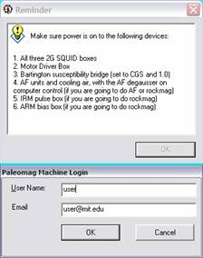
Overall Work flow
1. Load sample sets to be measured into the sample index registry, specifying the demagnetization or rock mag steps to be run.
2. If running using the automatic sample changer:
a) Tell the code which samples are in which holes.
b) Send the list of sample-hole assignments to the sample queue.
c) Start running the sample queue.
3. If running using manual sample changing:
a) Run a holder measurement, specifying the typical height of one of your samples. Heights are used to center a sample in the sense region. Thus, if you are trying to get the bottom of a sample into the sense region (as would be the case if you were running a rock mag sample in a tube), you must double the measured height before you enter it.
b) Select a sample, enter its height, and measure it. Enter the height as a negative value, e.g. -1.0 cm.
Sample Index Registry
In the sample index registry, you tell the code what sample sets you will be working with and what demagnetization step, AF demagnetization steps, or rock mag steps you will be measuring with those samples.
1. Select a SAM file by clicking on the “..” button next to the Data Directory field and opening the desired SAM file.
2. If you desire your data to be backed up as the run occurs(as you should), make sure “Backup Data” is checked and select the target backup drive.
þ If you want to back up data, make sure the checkbox is checked.
3. Select a type of demagnetization step.
NRM– Natural remanent magnetization measurement
MW – Microwave demagnetization step [not used]
TT – Thermal treatment step; specify temperature in the “Level” field,
Other– Fill in treatment type in adjacent field and level, if any, in “Level” field; for liquid nitrogen treatments, Caltech uses the treatment type “LT” and the level “77”.
AF– Alternating field demagnetization(see “Specifying AF Demagnetization or Rockmag Steps” section below)
Rockmag– Rockmag sequence (see “Specifying AF Demagnetization or Rockmag Steps” section below)
þ If you are running AF or Rockmag sequences, be sure to turn the cooling air on. A message box will remind you to do this.
4. Check directions to measure. Except for AF and Rockmag steps, it is standard to run both Up and Down measurements on samples. The two are averaged together to improve accuracy, and errors can be detected through mismatches. For AF of weak samples, it is possible to do both directions (see discussion below), but it is more typical to measure only the Up direction for AFs. For Rockmag, only one direction can be measured; it is standard to call this the Up direction. If you’ve already measured the Ups but have encountered an error and had to reset, you can check “Up already measured” to use previously measured up data.
þ Make sure the desired checkboxes are checked. They can change unexpectedly between runs.
5. Enter the number of measurement blocks per cycle. For most samples, this should be left at 1, but for particularly weak samples (e.g. many ancient platform carbonates), this can be increased to improve the quality of the measurement.
6. Check “Measure susceptibility” if desired; it is good to check this by default.
7. Click “Add to Registry.” The sample set will be listed in the registry display at the bottom of the window. Additional sample sets can be added if desired. Be careful to make sure that the magnetometer is not running (even a holder measurement) while you click “Add to registry” or “Clear registry”, because otherwise your command will not be executed.
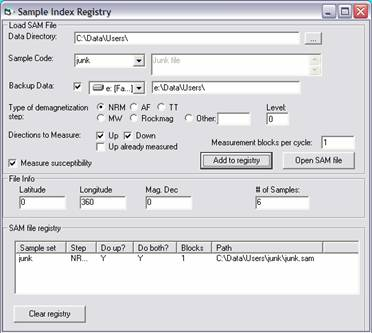
Specifying AF Demagnetization or Rockmag
Steps
If you selected “AF” or “Rockmag” as your type of demagnetization steps, you must specify the specific steps that you will run. When you select “AF” or “Rockmag”, the Level field in the Registry window will turn into a “Set levels” button. Click on this button to bring up the “Set Rock Mag Routine” window.
This window is divided into three parts “Presets”, “Set Steps”, and the step display. The set display will display the current list of rock mag or AF steps. It can be cleared by clicking on the “Clear” button. Individual steps can be deleted by selecting them and clicking on the “Delete” button.
? For
most AF measurements, you will use the first row of the “Set Steps” panel. For
most rock mag measurements, you will use the
“Presets” panel, first filling in the check boxes and text fields and then
clicking on “Rockmag ‘the Works’”.
The “Set Steps” panel has three rows. The first row lets you add a series of steps. For example, to add AF steps of 20 G from 0 to 200 G, you would specify “20 G steps up to 200 G of type AF, linear” and then click add. To add logarithmically spaced AF steps, for example powers of 2, you would specify “2 G steps up to 256 G of type AF, logarithmic.” The second row lets you add series of ARM steps. The third row lets you add individual steps; when using this row, you will usually want to ensure that the “Measure” box is checked.
þ If you are adding steps individually, make sure the Measure box is checked unless you really want to perform a treatment without measuring the result.
The “Presets” panel has two parts. The “Hawaiian Standard AF” button will add the quasi-logarithmically spaced AF steps 25, 50, 100, 200, 400, and 800 G. The “Rockmag ‘the Works’” button uses the fields below it to add a standard set of rock mag measurements to the step list.
If you want to measure and demagnetize the NRM of a rock mag sample, check the “Measure and AF demagnetize NRM” box; you will typically want to do this along all three axes.
If you want to measure the Rotational Remanent Magnetization (RRM) of a sample, check the RRM box and fill in the second row, e.g. “1 [rps steps] to 5 [rps] in AF 1000 [G], and negative rotations.” (Note that RRM is a fairly esoteric measurement; this is not part of most rock mag routines.)
If you want to measure the Anhysteretic Remanent Magnetization of a sample, check the ARM box and fill in the third row, e.g. “0.5 [G steps] to 10 [G] in AF 1000 [G].” You will also need to fill out the text fields in the row below (although not necessarily check the AF/IRM box) so that the ARM can be properly demagnetized.
If you want to acquire and demagnetize Isothermal Remanent Magnetizations, check the AF/IRM box and fill out the line, e.g. “1.26 [log G steps], minimum step size of 20 [G], to an AF maximum of 3000 [G] and a IRM maximum of 5000 [G].” If you specify maximum IRM and AF larger than the machine’s capability, it will run up to the machine’s maxima (specify in the program Settings).
If you want to do backfield IRM measurements, check the “DC demag via backfield IRM” button.
After you fill out these five lines, click the “Rockmag ‘the Works’” button to add the specified steps to the sequence.
? At
Caltech, on most samples we run AF of 25 G linear steps to 150 G, which removes
the low-coercivity component of samples carried viscously by superparamagnetic particles are by
multidomain magnetite. However, it is often a good
idea to perform rock mag measurements including a
complete AF demagnetization of NRM on a few representative end chips to
determine the optimal AF range.
At Caltech, the standard rock mag routine involves:
· ARM
of 0.5 G (DC biasing field) steps up to 10 G in a 1000 G (z-direction) AF field
· IRM
acquisition and demag with 1.26 log G steps, 20 G
minimum step size, up to 5000 G IRM/AF
For rock mag
measurements performed on samples with a NRM (i.e., end chips rather than
powders), we also demagnetize the NRM along all three axes.
To delete steps, select the number on the left using the left mouse button. You can also edit a line by clicking on it with the right mouse button. After doing this, the “Add” button will be temporarily changed to “Replace”. Make changes to the line as if you were adding a new one and when you are finished click “Replace”.
You can import a rock mag sequence from an “.RMG” file. You can also save, as a fake “.RMG” file, the rock mag sequence you built so that you don’t lose it.
When you are done setting the rock mag or AF steps, click OK. Remember the sample set must be added to the registry before the new routine takes effect. If, after adding samples to the registry, you want to alter the steps, select the sample set in the registry list, click on Set Levels again, and then re-add the sample set to the registry.
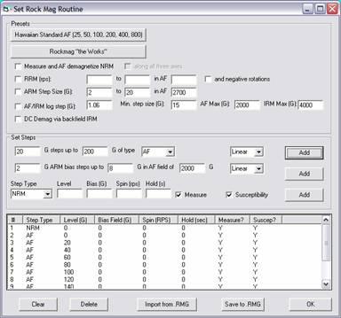
Running Samples with the Automatic Sample Changer
Once sample sets are added to the registry, you can then make measurements. With paleomag cores or end chips, the easiest way to do this is with the automatic sample changer. To use the automatic sample changer, go to the “Automatic Data Collection” tab in the Magnetometer Control window and click on Modify.
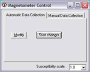
This will bring up a form in which you can tell program where samples are on the magnetometer tray. You do this with the options on the left half of the window. For instance, if your samples are loaded in hole 199, 198, 197, etc., with the first sample in hole 199, you would set the position of the first sample to 199, load order to be descending, and then click on Add to List.
The “From File” drop list can be used if you have more than one sample set loaded into the registry. In this case, you can use the drop list to specify a sample set under discussion, add those samples to the list, then move on to the next sample set and repeat the process.
The options on the right half of the dialog box apply to all the samples loaded and can generally be left at their default settings.
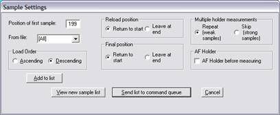
After adding the sample set to the list, you should click on “View new sample list.” This will bring up a table indicating which samples the code believes are in which slots. Individual samples can be deleted from the list by clicking on them and then select “Delete” from the pop up menu. [N.B. , the pop up menu sometimes stops appearing for inexplicable reasons.]
You should spot check the samples on the tray to make sure they are loaded into the right holes and direction, then click Ok. You can click on “Clear” if you want to reset the list.
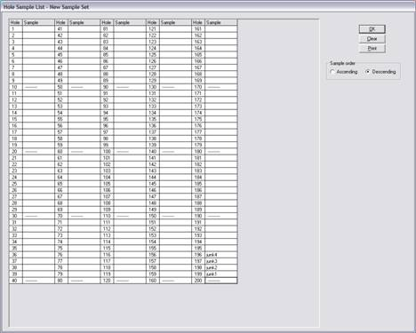
If, after closing the sample list, everything appears okay, click on “Send list to command queue.” This causes the program to scan through the list of samples on the tray and generate a set of instructions for the sample changer.
? There will be a delay after you click “Send list to command queue”. Do not click the button a second time.
If you are paranoid, you can check this list by selecting “Sample Queue Monitor” from the View menu. This is an entirely optional step.
To start running through the queue, click on “Start Changer” in the Magnetometer Control window. If the program is uncertain as to which sample slot is under the holder, it will ask you at this point. It is important to specify this correctly, as an incorrect entry could cause the quartz glass rod to try to drive itself forcefully into a sample, potentially damaging either the rod or the sample.
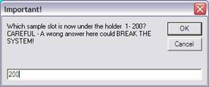
The magnetometer will make a holder measurement, and then commence measuring samples. As it does it each measurement step, the data will pop up on screen. Don’t move the Visual Basic windows when the magnetometer is working because VB sometimes freezes some of the communications during a display change. The most common such freezing effect is to not record one of the SQUID readings.
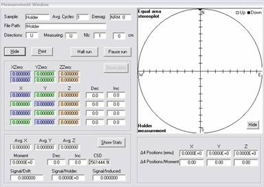
During the measurement sequence, each of the four positions will be plotted in an equal area projection (you can hide this by pressing Hide). In automatic sample changer mode, the height of the samples (in cm, generally negative at MIT) measured by the rod at the time of the pickup is displayed at the top of the measurement window below the demag step. Note that the holder measurements are made at altitude 0 cm in automatic sample changer mode.
After the measurement sequence, the average moment is printed at the bottom of the window as well as in the equal area projection with its alpha-95 ellipsoid. Below the latter, the amplitudes of the measurements on each axis are compared to the moment of the sample. In case of very weak measurements (for instance typical Holder measurements), the SQUID noise could be controlled by small SQUID jumps. When the noise is between 1 to 5 times greater than the moment of a particular measurement axis, that axis will light up orange. If the noise is more than 5 times greater than the moment of an axis, that axis will light up red. For a Holder measurement, you should consider redoing the Holder measurement, especially if you intend to measure a sample that is less than 100 times greater than the holder moment.
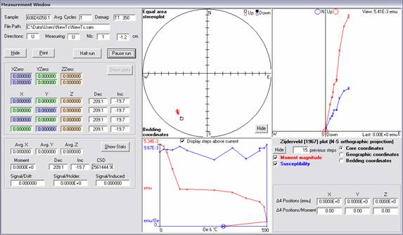
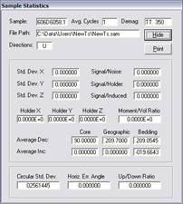
If you allow plotting the equal area, a Zijderveld projection will appear in the Measurement Window at the same time as the Sample Statistics window appears. You can select the number of previous steps you want to plot for the current sample. To refresh, change the coordinates of the plot from Core to Geographic or Bedding. The previous steps will also appear in the equal area projection.
In addition, the temperature and/or field dependence of the moment magnitude and bulk susceptibility are plot below the equal area plot.
If, at any point during a run, you need to pause it, click on the “Pause run” button. The program will stop making measurements soon, if not immediately, and the “Pause run” button will turn into a “Resume run” button.
If the magnetometer encounters an error during a run, it
will automatically pause the run. You must remember to
resume the run once the error is fixed.
In case of emergency, you can click on the “Halt run” button. This will raise the rod to the top and allow you to remove the sample before the reset of the program. The vacuum will remain on.
If you are doing both up and down measurements, the program will pause after completing the up measurements, send an email, and wait for the user to flip the samples. N.B., if you are running multiple sample sets at once, a dialog box asking for the samples to be flipped will pop up for each sample set, but the program may run a holder measurement in between dialog boxes. Make sure the instrument has resumed running samples before leaving it.
After completing an automatic run, the program will scan through the error angles of the samples and look for those with an error angle above a certain threshold, typically 8 degrees or 15 degrees. If it finds any, it will prompt you to re-run them. If you decline to re-run them, click on Clear in the Rerun Samples dialog box before clicking on Ok. If you want to adjust the threshold error angle, type in a new error angle and then click “Rescan”.
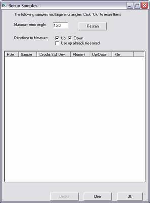
Running Samples Manually
Occasionally, you may wish to run samples without using the automatic sample changer. This will most commonly be the case if you need to run only one sample or if you are using samples that do not fit the sample handling system, such as NMR tubes. (At Caltech, we have a plastic adapter that allows NMR tubes to be manually loaded into the vacuum rod.)
For manual measurements, you must know the sample height. This height will be used to center the sample in the sense region; the program will adjust the positioning so that the center of the sample is centered in the sense region. Therefore, if you wish to center the bottom of a sample in the sense region, as you would if you were running a tube of powder for rock mag, you must double the height.
Before running manual measurements, you must run a holder measurement. Specify the same height you will be using for the sample measurement, and click on Measure Holder.
To run a sample, select the sample from the drop down box. For almost all cases, leave the range set at 1x. Set the sample height, and then click on Measure Sample.
At the end of the measurement(s), a message box will ask you to remove the sample before pressing ok and turning the vacuum off. However, a checkbox can be tagged to leave the vacuum on after the measurement(s) to prevent valuable samples from accidentally being dropped by clicking ok before removing them. Note: if you click on the checkbox while the vacuum is on and you are not measuring (Measure Sample button clickable), it will switch off the vacuum and the vacuum motor.
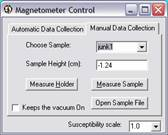
Automatic Remeasurements in
Case of SQUID Jumps
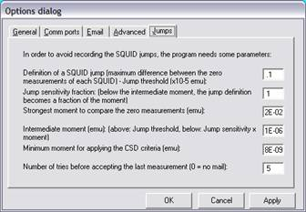
The program allows a user to remeasure weak samples multiple times (“blocks”) to beat down the instrument noise. In addition to this feature, the program automatically tests each measurement before the sample statistics window pops up. If certain quality criteria are not met, the sample is automatically remeasured and previous bad measurements thrown away (not averaged into the final measurement like a multiple blocks measurement series). The maximum allowable number of automatic remeasurement is specified by the user in the Options dialog window (default 5). If you don’t want to rescan, change that number to 0.
These automatic remeasurements should not be used to build up measurements on weak samples but rather to mitigate SQUID jumps. What is a SQUID jump? The MIT lab is in a high radio frequency interference (RFI) environment. RFI bursts can cause the SQUIDs to jump to a different working voltage or even to go normal. If such a jump occurs during a measurement, one or both of the two zero measurements or the four sample measurements can be way off.
The program has two main automatic remeasurement schemes for SQUIDs jumps: CSD threshold, and zero measurement criteria.
CSD threshold: The sample is remeasured if either the CSD exceeds some user-defined “CSD Threshold” (in the Options dialog window, General tab), signal/noise > 1, or signal/induced > 1. This mitigates SQUID jumps occurring during the four sample measurements.
Zero measurement criterion: If a jump occurs after the first zero measurement or just before second zero measurment, the four sample measurements will be similar and not flagged by the CSD criteria (the vertical SQUID is particularly susceptible to this problem for obvious reasons). To detect such jumps, the program compares the two zero measurements. The user defines the acceptable difference between the two zero measurements and if the actual difference is above this threshold the sample is remeasured.
In particular, we have defined four ranges and two definitions of a SQUID jump during the zero measurements:
·
For a sample magnetization above 2E-2 emu, the SQUIDs will not be
stable and the comparison between the two zero measurements will not be done;
·
Above 1E-6, the SQUID jump is detected when
the difference between the zero measurements is above 0.1E-5 emu for any axis;
·
Between 1E-6 and 8E-9 emu,
the threshold is proportional to the moment: the sample will be remeasured if the difference between the two zero
measurements exceeds the measured magnetization x JumpSensitivity
/ 1E-5 where JumpSensitivity is a user-defined value.
The default value of JumpSensitivity is 1, which
allows jumps of the order of magnitude of the moment without remeasurement;
·
Below 8E-9emu, only a large jump (above 0.1E-5 emu per axis) will provoke a remeasurement.
Ending your session
To end your session, click “Log out.” To stop the program click Cancel in the login box. In case the vacuum is on, a message box gives you the possibility to remove the sample.
Common Errors
Unacceptable motor slop
Unacceptable motor slop errors occur when the DC motors fail to reach their target positions. This is often due to misaligned sample pickup or misalignment of the instrument. If the former, the problem can often be fixed by using the DC motors diagnostic routine to Home to Top, then adjusting the sample position.
Among other things, unacceptable slop errors can mean: a) time to wipe and teflon-spray the rails, or b) time to clean out the guide hole in the plexiglass plate, or c) time to clean out the turning bearings, or d) time to adjust the tension on the up-down drive belt, or e) time to clean the debris off the tray.
AF Error: TRACK ERROR
The track error is the most dangerous of the AF unit errors. If the AF unit gets stuck ramping up, the coil can melt. Generally, if this is the case, you will hear the humming produced by the AF coil.
Check the AF unit. If the Zero light is on, then the machine has safely ramped down. If both the Zero light and Track lights are on, then the machine has reset. In either case, it is ok to Resume. Otherwise, turn down both the knobs on the AF amplifier, then shut off the AF control unit. Let both sit for a minute, then turn the knobs on the amplifier back up and the AF control unit back on.
Sequential track errors generally indicate that the AF coils are too warm. Let the instrument sit paused for half an hour or so before resuming measurements.
AF Alert: NO DONE FROM AF BOX
Changing the default delay from 1 to 2 has essentially eliminated all AF errors at MIT. We expect this will solve the AF errors for other institutions as well. Nevertheless, in case you do still see them, we describe below the two previously common AF errors and what they mean.
If you receive an email about an AF error with the text “AF status=zero” (this is usually not a “bad” AF error), the Done from the box arrived too quickly. Thus, the program is waiting for more than 90 seconds for the Done while the AF unit is giving a blank answer. To solve that alert, you should increase the Delay time of the AF unit.
If you receive an email about an AF error with the text “Target amplitude reported as zero, so unit appears to have reset.” then during the cycle, before ramping down, the AF unit switched from one coil to another (this is a “bad” error and often results in cooking your sample). The coil which ramped up was switched off at the higher field, applying an ARM-like moment on the sample. Moreover, the Helmholtz coils (transverse) requires more current for the same field on the solenoid coil (axial). In case of a ramp up on X which switch on Z for the ramp down, the AF field seen by the sample will be much greater than the expected one, which could be increase the disaster on the magnetization. To solve that alert, you should increase the Delay time of the AF unit.
Tips and Tricks
Splitting a sample set in two
Let’s say you want to split sample set T into two subsets, T1 and T2. Create two new directories parallel to the directory T, called T1 and T2. Copy T.sam into both these directories, and the samples files you want in each subset to the respective directory. Then, rename T.sam in T1 to T1.sam and edit it with a text editor (say, Notepad) so that it only lists the samples in subset T1. Do the same with T2.
Preparing rock mag sample sets before measuring mass
When you do rock mag measurements, it’s a good idea to know the mass of your sample before hand. Sometimes, however, you won’t know this before setting up the .SAM file. Let’s say, for example, you have a large paleomag data set and you want to run rockmag on a subset of the samples. Use the Excel worksheet to create a new sample set, keeping the volume listed in the worksheet at 1.0.
Then, before you run each sample, edit its sample file with a text editor so that the sixth field of the second row is the newly measured mass of the sample. You can open the sample file by selecting the sample in the Manual Magnetometer Control panel and then clicking “Open Sample File.” Make sure that the number you enter is not more than five characters long and that its final character is in the same position at the last character of the “1.0” string that you’re replacing.
Cleaning the glass rod
The glass rod will periodically need to be cleaned… Generally, if the moment of the empty holder is too high for your liking you can do a quick clean with Kimwipes and alcohol. Alternatively you can lower the rod into the AF region (from the DC Motors window) and perform Clean Coils (from the AF Degausser window).
Do not attempt removal and chemical cleaning of the rod if you are not familiar with the system. The rod can easily break….
Diagnostic Options
The dialog boxes available from the Diagnostics menu allow you access to the inner workings of the program. They allow you to monitor the communications the program sends to the different external units, as well as to send arbitrary commands to them. The most commonly used functions are described below.
AF Degausser
Connect: establishes a connection to the AF box.
Send Status: Sends a “DSS” status string request to the AF box. Response is displayed in the input window.
Active Coil System: Switches between the axial and transverse coil. Which coil is on which Cartesian coordinate is specify in the program Settings.
Set Amplitude without Calibration: Allows you to set the amplitude on the AF unit in internal units.
Set Amplitude: Sets amplitude in Gauss.
Set Delay: Sets the duration of the unit delay at peak field. Default on the Caltech systems is 1. Default on the MIT system is 2 to avoid the AF Alert.
Set Ramp: Sets the ramp rate. Default on the Caltech systems is 3.
Execute Ramp: Allows you to execute a ramp Up, ramp Down, or ramp Cycle. Be extremely careful when executing a ramp Up, as prolonged periods at peak field can cause the coils to melt.
Clean Coils: Executes a maximum field cycle on each axis.
Waiting time: Allows a delay between each axis (default is 0 second). This can be used to keep the coils and metallic samples cool during high AF runs.
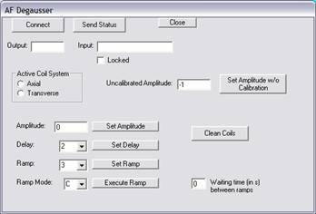
DC Motors
Connections: Opens/Closes comm port connection to each motor.
Active Controls: Controls which motor will be controlled by motor non-specific functions.
Move to Position: Moves to specified target position at specified velocity.
Home to Top: Moves Up/Down motor as far up as possible and resets zero position.
Sample pickup: Lowers Up/Down motor to sample pickup position (near the base of the slot).
Sample Dropoff: Lowers Up/Down motor to sample dropoff position, which takes the height of the sample into account.
Change Height: Moves Up/Down motor to specified height.
Change Turn Angle: Rotates turning motor to specified angle.
Change Hole: Moves tray to specified hole.
Spin sample: Spins turning motor at specified rotation rate.
Set position: Fills in the target position field at the specified level.
Zero T/P: Resets motor position to zero.
Relabel P: Sets current motor position to equal value in target position field.
Set Current Hole: Sets current sample tray position to value in Change Hole field.
Read Position: Reads position of active motor.
Read Angle: Reads turning motor angle.
Read hole: Reads sample changer slot.
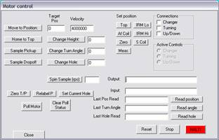
Calibration of the Sample Rod Vertical Positioning
In Paleomag 2008, an automated sequence, accessible from the Settings window, has been introduced which helps to define the different positions used during measurements. However, you need to have some pre-existing parameters quite well defined (number of motor steps for a 1 cm up/down motion, the difference in motor steps between the AF/IRM and the measuring position, as well as some rough ideas of the measurement and sample changer plate relative positions).
You should use the susceptibility standard from Bartington (or any standard to verify the measures). Write the 4 digits of the Kvol find on the Bartington standard, or uncheck the susceptibility tag if it is another sample. Place the sample in sample changer plate hole 1 and be sure that hole 199 is free. Then, let the sequence run for 4 to 8 minutes in order to find:
·
the top and bottom of the sample changer (Sample
Pickup and Sample Dropoff positions);
·
the measurement position where the SQUIDs are located in the magnetometer, with the zeroing
situated at ~5000 units (+-500) above;
·
the new AF and IRM positions (calculated
relative to the measuring position if you are not using the susceptibility
coil);
·
if you are using the Bartington standard, it will also define the AF and IRM
positions by measuring their distance relative to the susceptibility coil (much
more sensitive to positioning than the SQUIDs). The
moment susceptibility calibration factor (in CGS units) can be changed if the
susceptibility measurements are not centered around
the standard Kvol value provided by Bartington.
Off course, you should validate the new positions to make sure they are reasonable. You can plot in Excel the text file (default is CalibRod in the program (not user) directory) which has recorded all the measurements. You should restart the program after using this automated sequence.
ARM/IRM Controller
ARM Bias Field: Sets ARM biasing field.
Fire IRM Voltage: Charges up to specified voltage and then fires.
Fire peak field: Charges up to specified field and then fires.
Interrupt: Interrupts charging cycle.
HF Coil/LF Coil: Allows you to switch between coils on systems with multiple coils. The Caltech instruments currently have only a LF coil.
Negative polarity: Switches the polarity on the coil. This is an option on the Caltech instruments. There is not room on the AF units to accommodate both negative polarity and HF coil options.
Read IRM Voltage: Reads IRM voltage on instruments with a feedback line.
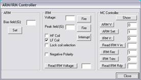
Vacuum
Vacuum Connect: Flips valves that connects the quartz glass rod to the vacuum.
Vacuum Motor: Toggles relay indicating that the instrument wants to the vacuum motor to be on.
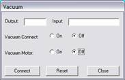
Appendix 1: Data File Formats
.SAM files: The SAM file lists all the samples in a sample set. It should be stored in a directory of the same name as the file.
[The following description is modified from the documentation for Craig Jones’ Paleomag routines at http://cires.colorado.edu/people/jones.craig/PMag_Formats.html.]
East Rotated Block (East end of block east of
36.2 245.3 14.0
42.2 45.8¶
erb1.0a
12.3aa¶
erb2.0a
23.4ab¶
The first line is a comment line. The fields of the second line are the locality's latitude (first 5 characters) in °N, locality longitude (next 5 after a space) in °E, and the magnetic declination (next 5 after a space) in °E of °N. Two fields can follow the magnetic declination: the azimuth and plunge of a fold axis (both are 5 characters after a space). The following two fields can be added by PaleoMag and will usually be blank before using the code. These are the average strike and dip of the beds at the locality (used for the tilt-corrected reference directions; see "Equal Area Options..." under the Edit menu, above), both a space and 5 characters. All following lines are the filenames of samples from this locality with the stratigraphic level (8 characters and underlined, indicating that it is added by PaleoMag to the standard CIT format) and the site id (optional), which is two letters (case-dependant).
Sample files: The data for each file is stored in a sample file, identified by the name given in the .SAM file. The sample files must be created before the sample is run.
T c112-0.03 ¶
0.03264.0 90.0 0.0 0.0 1.0¶
NRM 350.2 28.3 350.2 28.3 1.26E-06 002.7 241.4 -7.7 0.004660 0.003571 0.001195 bpweiss 2007-08-30 12:39:23¶
[The following description is taken from the documentation for Craig Jones’ Paleomag routines.]
In the first line the first four
characters are the locality id, the next 9 the sample id, and the remainder (to
255) is a sample comment.
In the second line, the first
character is ignored, the next 6 comprise the stratigraphic
level (usually in meters). The remaining fields are all the same format: first
character ignored (should be a blank space) and then 5 characters used. These
are the core strike, core dip, bedding strike, bedding dip, and core volume or
mass. Conventions are discussed below. CIT format can include fold axis and
plunge, which at present is unused.
The following lines are in the
order the demagnetizations were carried out. The first 2 characters (3 for NRM
only) is the demag type (AF for alternating field, TT
for thermal, CH for chemical, etc.), the next 4 (3 for NRM) is the demag level (°C for thermal, mT
for alternating field, etc.), the next 6 (first blank for all the following
fields) for geographic ("in situ") declination of the sample's
magnetic vector, next 6 for geographic inclination, next 6 for stratigraphic declination, next 6 for stratigraphic
inclination, next 9 for normalized intensity (emu/cm^3; multiply by the core
volume/mass to get the actual measured core intensity), next 6 for measurement
error angle, next 6 for core plate declination, next 6 for core plate
inclination, and the next three fields of 8 each are the standard deviations of
the measurement in the core's x, y, and z coordinates in 10^5 emu. The final three fields contain the user name, date,
and time of measurement
.RMG files: When making susceptibility measurements or running rock magnetics experiments, data are also stored in a comma-delineated .RMG file, as shown below. Fields are labeled in a header row.
amb1-20030923-b3bottom,,Vol:1,
¶
,Level,Bias
Field (G),Spin Speed(rps),Hold Time (s),Mz (emu),Std. Dev. Z,Mz/Vol,Moment Susceptibility(emu/Oe),Mx (emu),Std. Dev. X,My (emu),Std. Dev. Y ¶
Instrument:Lowenstam 2G Magnetometer Sample Changer, 0 , 0 , 0 , 0 , 0 ,
0 , 0 , 0 , 0 , 0, 0 , 0 ¶
Time:5/22/2006
10:21:35 AM, 0 , 0 , 0 , 0 , 0 , 0 , 0 , 0 , 0 , 0 , 0 , 0 ¶
AFmax,850
, 0 , 0 , 0 ,-1.83039034923165E-08 , 3.42212710508044E-10,-1.83039034923165E-08
, 0 ,-2.85789943823964E-09 , 1.29382514677378E-09 ,4.70175056067857E-09 ,
2.16783152297401E-09 ¶
ARM,1000
, 0 , 0 , 0 ,-1.50331035063758E-08 , 3.99137640235756E-10,-1.50331035063758E-08
, 0 , 4.44277505705283E-08 , 2.51525292791469E-09,-5.08489944918086E-09 ,
8.4611914977449E-10 ¶
Appendix 2: Using the SampleHeaderSunCompass Excel Sheet to Create .SAM and Sample files
The easiest way to set up the .SAM and sample files for your paleomag and rockmag runs is to use the SampleHeaderSunCompass Excel spreadsheet, designed by James Martin at Caltech.
When you start the spreadsheet, a dialog box prompts you for basic site information. Type in the new file name, the path where the data directory will be created, location directory, and location information. It is often easiest to create the data directory on the desktop and then copy it to its destination on both the main server and the backup server.
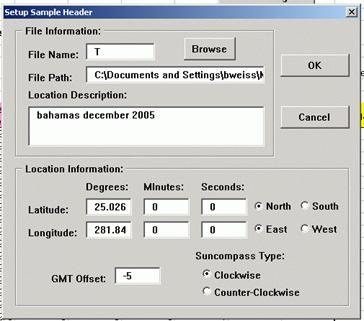
Then, fill out the spreadsheet. For each sample, the sample name will be the file name plus the sample number.
For rock mag samples, we typically use the volume field to store mass, either in g or mg. (Specify which in a parenthetical comment in the description, e.g. “(mass in mg)”.) Otherwise, we commonly leave volume set to 1.
When the spreadsheet is filled out, click on Create Header Files to create the header files.
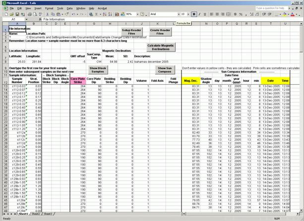